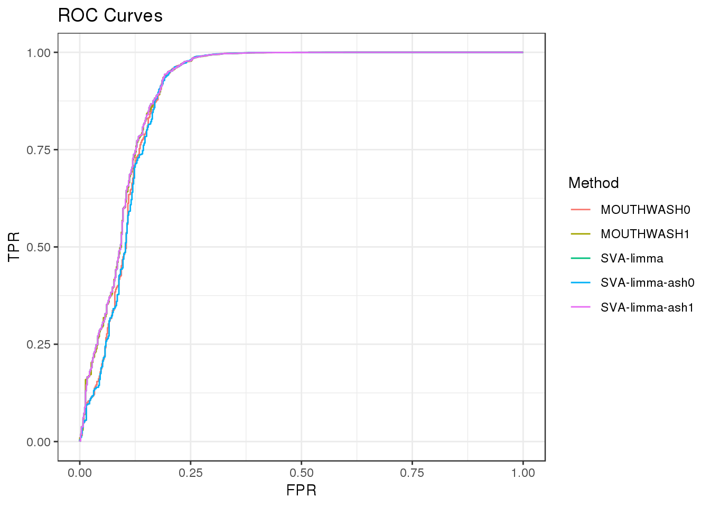
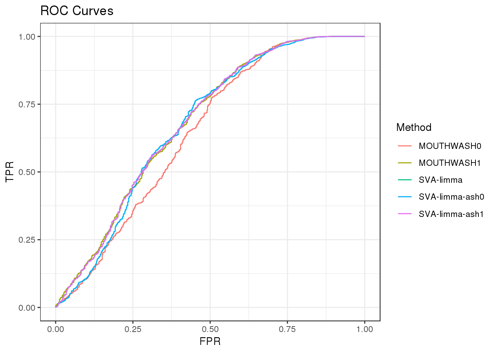

scde - check Mouthwash
DongyueXie
2020-02-28
Last updated: 2020-03-04
Checks: 7 0
Knit directory: misc/
This reproducible R Markdown analysis was created with workflowr (version 1.6.0). The Checks tab describes the reproducibility checks that were applied when the results were created. The Past versions tab lists the development history.
Great! Since the R Markdown file has been committed to the Git repository, you know the exact version of the code that produced these results.
Great job! The global environment was empty. Objects defined in the global environment can affect the analysis in your R Markdown file in unknown ways. For reproduciblity it’s best to always run the code in an empty environment.
The command set.seed(20191122) was run prior to running the code in the R Markdown file. Setting a seed ensures that any results that rely on randomness, e.g. subsampling or permutations, are reproducible.
Great job! Recording the operating system, R version, and package versions is critical for reproducibility.
Nice! There were no cached chunks for this analysis, so you can be confident that you successfully produced the results during this run.
Great job! Using relative paths to the files within your workflowr project makes it easier to run your code on other machines.
Great! You are using Git for version control. Tracking code development and connecting the code version to the results is critical for reproducibility. The version displayed above was the version of the Git repository at the time these results were generated.
Note that you need to be careful to ensure that all relevant files for the analysis have been committed to Git prior to generating the results (you can use wflow_publish or wflow_git_commit). workflowr only checks the R Markdown file, but you know if there are other scripts or data files that it depends on. Below is the status of the Git repository when the results were generated:
Ignored files:
Ignored: .Rhistory
Ignored: .Rproj.user/
Untracked files:
Untracked: analysis/methylation.Rmd
Untracked: code/Rplots.pdf
Untracked: code/sccytokines.R
Untracked: data/bart/
Untracked: data/cytokine/DE_controls_output_filter10.RData
Untracked: data/cytokine/test.RData
Untracked: data/cytokine_normalized.RData
Untracked: data/mout_high_alpha0.RData
Untracked: data/mout_high_alpha1.RData
Unstaged changes:
Deleted: data/mout_high.RData
Modified: data/sva_sva_high.RData
Note that any generated files, e.g. HTML, png, CSS, etc., are not included in this status report because it is ok for generated content to have uncommitted changes.
These are the previous versions of the R Markdown and HTML files. If you’ve configured a remote Git repository (see ?wflow_git_remote), click on the hyperlinks in the table below to view them.
| File | Version | Author | Date | Message |
|---|---|---|---|---|
| Rmd | e1b4b0a | DongyueXie | 2020-03-04 | wflow_publish(“analysis/scdeMouthwash.Rmd”) |
Introduction
Investigate why MOUTHWASH did not perform well in my previous analysis.
Matthew suggested to look at the \(\alpha\) value in ash.
For each gene \(j=1,2,...,G\), \(\hat\beta_j\), estimated effect size and \(\hat s_j\), standard error of the estimator are avaialbe from a statistical procedure like linear modelling. The t-statistics for testing \(H_0: \beta_j = 0\) is \(\frac{\hat\beta_j}{\hat s_j}\).
ash prior: \(\frac{\beta_j}{\hat{s}_j^\alpha}|\hat s_j \sim g(\cdot)\), \(\alpha\geq 0\). When \(\alpha>0\), this prior suggets effects with larger s.e. tend to be larger. When \(\alpha=1\), lfsr is monotonic in p-values so ash-lfsr should give the same significant ranking as the one using p-values.
library(vicar)
library(sva)
library(cate)
library(seqgendiff)
load('data/scCDT.RData')set.seed(12345)
CDT = as.matrix(CDT)
# add signals to null data, 90% are null, 10% signals.
thinout = thin_2group(round(CDT),0.9,signal_fun = stats::rexp,signal_params = list(rate=0.2))
num_sv=3
Y = t(thinout$mat)
# for now just remove genes with no observations.
#### could also try to remove genes with less than 10 non-zero appearances.###
remove.idx = which(colSums(Y)==0)
eps=0.5
Y = log(Y[,-remove.idx]+eps)
X = model.matrix(~thinout$designmat)
which_null = c(1*(abs(thinout$coef[-remove.idx]) < 10^-6))
# directly apply ash to sva-limma with alpha=0 or 1 and compare results with mouthwash(alpha=0 or 1) and sva
# rank genes by p value and lfsr
# mouthwash alpha = 0
#mout = mouthwash(Y,X,k=num_sv,cov_of_interest = 2,include_intercept = FALSE,sprop = 0,scale_var = FALSE)
#save(mout,file = 'data/mout_high_alpha0.RData')
load('data/mout_high_alpha0.RData')
# mouthwash alpha = 1
#mout1 = mouthwash(Y,X,k=num_sv,cov_of_interest = 2,include_intercept = FALSE,sprop = 1,scale_var = FALSE)
#save(mout1,file = 'data/mout_high_alpha1.RData')
load('data/mout_high_alpha1.RData')
# sva-limma
#sva_sva = sva::sva(dat = t(Y), mod = X, mod0 = X[, -2, drop = FALSE], n.sv = num_sv)
#save(sva_sva,file = 'data/sva_sva_high.RData')
load('data/sva_sva_high.RData')
X.sva <- cbind(X, sva_sva$sv)
lmout <- limma::lmFit(object = t(Y), design = X.sva)
eout <- limma::eBayes(lmout)
svaout <- list()
svaout$betahat <- lmout$coefficients[, 2]
svaout$sebetahat <- lmout$stdev.unscaled[, 2] * sqrt(eout$s2.post)
svaout$pvalues <- eout$p.value[, 2]
# sva-limma-ash-alpha 0
sva_limma_ash0 = ashr::ash(svaout$betahat,svaout$sebetahat,alpha=0)
# sva-limma-ash-alpha 1
sva_limma_ash1 = ashr::ash(svaout$betahat,svaout$sebetahat,alpha=1)Let’s look at the relationship between \(\hat s_j\) and \(\hat\beta_j\), from limma. The plot indeed suggests effects with larger s.e. tend to be larger.
plot(svaout$sebetahat,abs(svaout$betahat),col=4,pch='.', xlab='standard error', ylab='estimated effects(absolute value)')
ROC
Compare the following methods:
MOUTHWASH0: Mouthwash, sprop=0 (corresonds to alpha=0 in ash), output lfsr
MOUTHWASH1: Mouthwash, sprop=1 (corresonds to alpha=1 in ash), output lfsr
SVA-limma: Run sva and limma , output p-value
SVA-limma-ash0: Run sva and limma, then run ash(alpha=0) with betahat and sehat, output lfsr
SVA-limma-ash1: Run sva and limma, then run ash(alpha=1) with betahat and sehat, output lfsr
library(ggplot2)
################
roc_out <- list(
pROC::roc(response = which_null, predictor = c(mout$result$lfsr)),
pROC::roc(response = which_null, predictor = c(mout1$result$lfsr)),
pROC::roc(response = which_null, predictor = c(svaout$pvalues)),
pROC::roc(response = which_null, predictor = c(sva_limma_ash0$result$lfsr)),
pROC::roc(response = which_null, predictor = c(sva_limma_ash1$result$lfsr)))
name_vec <- c("MOUTHWASH0","MOUTHWASH1","SVA-limma","SVA-limma-ash0","SVA-limma-ash1")
names(roc_out) <- name_vec
sout <- lapply(roc_out, function(x) { data.frame(TPR = x$sensitivities, FPR = 1 - x$specificities)})
for (index in 1:length(sout)) {
sout[[index]]$Method <- name_vec[index]
}
longdat <- do.call(rbind, sout)
shortdat <- dplyr::filter(longdat, Method == "MOUTHWASH0" | Method == "MOUTHWASH1" |
Method == "SVA-limma" | Method == "SVA-limma-ash0" | Method == "SVA-limma-ash1")
ggplot(data = shortdat, mapping = aes(x = FPR, y = TPR, col = Method)) +
geom_path() + theme_bw() + ggtitle("ROC Curves")
auc_vec <- sapply(roc_out, FUN = function(x) { x$auc })
knitr::kable(sort(auc_vec, decreasing = TRUE), col.names = "AUC", digits = 3)| AUC | |
|---|---|
| SVA-limma | 0.830 |
| SVA-limma-ash1 | 0.830 |
| MOUTHWASH1 | 0.828 |
| SVA-limma-ash0 | 0.798 |
| MOUTHWASH0 | 0.723 |
# method_list <- list()
# method_list$CATErr <- list()
# method_list$CATErr$betahat <- c(cate_cate$beta)
# method_list$CATErr$sebetahat <- c(sqrt(cate_cate$beta.cov.row * c(cate_cate$beta.cov.col)) / sqrt(nrow(X)))
#
# method_list$SVA <- list()
# method_list$SVA$betahat <- c(svaout$betahat)
# method_list$SVA$sebetahat <- c(svaout$sebetahat)
#
# ashfit <- lapply(method_list, FUN = function(x) { ashr::ash(x$betahat, x$sebetahat)})
# api0 <- sapply(ashfit, FUN = ashr::get_pi0)
# api0 <- c(api0, MOUTHWASH = mout$pi0)
# #api0 <- c(api0, BACKWASH = bout$pi0)
#
# knitr::kable(sort(api0, decreasing = TRUE), col.names = "Estimate of Pi0")Rank genes
Rank genes based on lfsr and p-values.
mout0_rank = order(mout$result$lfsr,decreasing = F)
mout1_rank = order(mout1$result$lfsr,decreasing = F)
svalimma_rank = order(svaout$pvalues,decreasing = F)
svalimma_ash0_rank = order(sva_limma_ash0$result$lfsr,decreasing = F)
svalimma_ash1_rank = order(sva_limma_ash1$result$lfsr,decreasing = F)Compare top 10 genes ranked by sva-limma and sva-limma-ash1.
ng=10
ranks = cbind(svalimma_rank[1:ng],svalimma_ash1_rank[1:ng])
colnames(ranks) = c('sva-limma','sva-limma-ash1')
rownames(ranks) = 1:ng
knitr::kable(ranks)| sva-limma | sva-limma-ash1 |
|---|---|
| 5195 | 1505 |
| 5374 | 5195 |
| 10144 | 5374 |
| 11354 | 10144 |
| 1505 | 10954 |
| 10954 | 11354 |
| 6138 | 6138 |
| 11018 | 11018 |
| 8816 | 8816 |
| 6850 | 6850 |
The first 6 are different. How about the rest genes? From the plot below, the ranks are the same.
plot(svalimma_rank[-c(1:6)],svalimma_ash1_rank[-c(1:6)],xlab = 'gene ranks - sva_limma_p-value',ylab = 'gene ranks - sva_limma_ash1')
Why the first 6 genes are different? Let’s look at the p-values and lfsr. The first 6 genes have 0 lfsr due to numerical precision limit I guess.
svaout$pvalues[svalimma_rank[1:6]][1] 0.000000e+00 0.000000e+00 0.000000e+00 0.000000e+00 2.066745e-316
[6] 6.346408e-261sva_limma_ash1$result$lfsr[svalimma_ash1_rank[1:6]][1] 0 0 0 0 0 0
sessionInfo()R version 3.5.1 (2018-07-02)
Platform: x86_64-pc-linux-gnu (64-bit)
Running under: Scientific Linux 7.4 (Nitrogen)
Matrix products: default
BLAS/LAPACK: /software/openblas-0.2.19-el7-x86_64/lib/libopenblas_haswellp-r0.2.19.so
locale:
[1] LC_CTYPE=en_US.UTF-8 LC_NUMERIC=C
[3] LC_TIME=en_US.UTF-8 LC_COLLATE=en_US.UTF-8
[5] LC_MONETARY=en_US.UTF-8 LC_MESSAGES=en_US.UTF-8
[7] LC_PAPER=en_US.UTF-8 LC_NAME=C
[9] LC_ADDRESS=C LC_TELEPHONE=C
[11] LC_MEASUREMENT=en_US.UTF-8 LC_IDENTIFICATION=C
attached base packages:
[1] stats graphics grDevices utils datasets methods base
other attached packages:
[1] ggplot2_3.1.1 seqgendiff_1.2.1 cate_1.0.4
[4] sva_3.30.0 BiocParallel_1.16.0 genefilter_1.64.0
[7] mgcv_1.8-25 nlme_3.1-137 vicar_0.1-10
loaded via a namespace (and not attached):
[1] Biobase_2.42.0 svd_0.4.1 foreach_1.4.4
[4] bit64_0.9-7 splines_3.5.1 assertthat_0.2.0
[7] highr_0.7 mixsqp_0.2-2 stats4_3.5.1
[10] blob_1.1.1 yaml_2.2.0 pillar_1.3.1
[13] RSQLite_2.1.1 backports_1.1.2 lattice_0.20-38
[16] glue_1.3.0 limma_3.38.2 pROC_1.13.0
[19] digest_0.6.18 promises_1.0.1 colorspace_1.3-2
[22] htmltools_0.3.6 httpuv_1.4.5 Matrix_1.2-15
[25] plyr_1.8.4 XML_3.98-1.16 pkgconfig_2.0.2
[28] esaBcv_1.2.1 purrr_0.3.2 xtable_1.8-3
[31] corpcor_1.6.9 scales_1.0.0 whisker_0.3-2
[34] later_0.7.5 git2r_0.26.1 tibble_2.1.1
[37] annotate_1.60.0 IRanges_2.16.0 withr_2.1.2
[40] ashr_2.2-39 BiocGenerics_0.28.0 lazyeval_0.2.1
[43] survival_2.43-1 magrittr_1.5 crayon_1.3.4
[46] memoise_1.1.0 evaluate_0.12 fs_1.3.1
[49] doParallel_1.0.14 MASS_7.3-51.1 truncnorm_1.0-8
[52] tools_3.5.1 matrixStats_0.54.0 stringr_1.3.1
[55] S4Vectors_0.20.1 munsell_0.5.0 AnnotationDbi_1.44.0
[58] compiler_3.5.1 rlang_0.4.0 grid_3.5.1
[61] leapp_1.2 RCurl_1.95-4.11 iterators_1.0.10
[64] labeling_0.3 bitops_1.0-6 rmarkdown_1.10
[67] codetools_0.2-15 gtable_0.2.0 DBI_1.0.0
[70] ruv_0.9.7 R6_2.3.0 gridExtra_2.3
[73] knitr_1.20 dplyr_0.8.0.1 bit_1.1-14
[76] workflowr_1.6.0 rprojroot_1.3-2 pscl_1.5.2
[79] stringi_1.2.4 SQUAREM_2017.10-1 parallel_3.5.1
[82] Rcpp_1.0.2 tidyselect_0.2.5